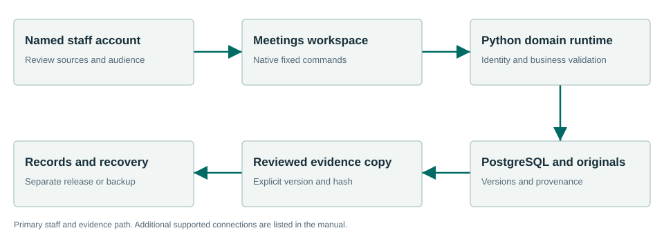

Using this manual
Townlight Meetings helps clerks, meeting coordinators and authorized reviewers. Meetings supports clerk preparation and the retained proceedings of a meeting: agenda items, packets, motions, votes, supplied transcript material, minutes decisions and archives. It supplies canonical meeting and agenda context to Station.
Staff should begin with First run and Daily workflow. Administrators should also read Architecture, Technical specifications, Configuration, Security and Recovery. Developers should use the exact API/data dictionary and examples. The table of contents and alphabetical subject index link to the relevant sections in the HTML edition; the PDF preserves headings and searchable text. An editable Word edition is included with the same documentation companion.
Beta identity
| Identity | Value |
|---|---|
| Public documentation identity | Townlight Beta 1 |
| Installer version | 1.6.0.1 |
| Product component | civicclerk 1.0.4 |
| Native desktop source version | 1.6.0-1 |
| Candidate MSI SHA256 | 98bcdef11ebdf5c767f620c904ff49f85115fde3b5c23f62703b111e645aaf86 |
| Corresponding-source SHA256 | 84a23e1297e42d17b16cfc9e51b2dd78bc46414c0de8ad7ebd2466c1a409d06b |
| Current owned software license | AGPL-3.0-only |
| Supported acceptance profile | Windows x64 fresh install; inspections-preview; separate Station configuration |
“Townlight Beta 1” identifies this coordinated beta delivery. It does not renumber the installer, native binary, Python packages or historical receipts. Component versions may differ. This documentation is a later companion to unchanged signed bytes, not a rebuilt installer. Historical release pages and manuals describe their own versions and are not the download instructions for this private candidate.
First run
- Obtain the identified signed private candidate and its corresponding-source companion from the beta coordinator. The landing pages in this documentation are not an installer download service.
- On the intended fresh Windows test installation, verify the MSI hash and publisher signature before installing. Preserve unrelated profiles and recovery material. This candidate has fresh-install acceptance; historical in-place upgrades are unverified.
- Launch Townlight under the intended named Windows account. Choose
the storage folders. Select Townlight Inspections
candidate (
inspections-preview) for all eight desktop products. A narrower default selection will not expose all workspaces. - Enter the city profile, time zone and contacts. Create the first named local administrator, sign in and choose protected backup storage. Continue without local AI is valid for the deterministic workflows.
- Run Health Check and wait for readiness. Open Townlight. In System Health select Finish Records Migration to activate the canonical Python/PostgreSQL runtime. Do not fabricate migration receipts or seed accounts.
- Create named staff through Settings. Import authorized sources using each product’s source library. All examples in this package are synthetic; they are not municipal authority.
- Provision Station separately if it is part of the beta exercise. Selecting the desktop composition does not start or configure Station. Configure vision explicitly only if automatic photo drafting is selected.
Daily workflow
1. Create the meeting
Enter its title, date/time including the intended time zone, location and meeting type. Save and reopen it before adding downstream evidence.
2. Prepare the agenda and packet
Create agenda items, assign them to the actual meeting and record review. Assemble a packet from the selected items and source documents. Check the saved assembly’s packet identifier before using it for an archive or delivery.
3. Record notice work
Use the existing notice checklist, template and posting-proof controls where applicable. A calculated checklist is evidence for clerk review; staff verify the jurisdiction’s notice requirements and actual posting.
4. Record proceedings
Capture the actual motion, seconder and votes. Record corrections as corrections, preserving the earlier event. Retain supplied transcript text with its source label.
5. Review minutes
Draft from identified source material. Check the citations and wording. Record the explicit minutes decision; a draft or a motion is not adopted minutes.
6. Record legislation evidence
When an ordinance or resolution is adopted, record the actual Code connection decision. Code staff separately perform codification; meeting adoption does not silently rewrite the code.
7. Archive and hand off
Choose the appropriate visibility and saved packet/minutes. Inspect the resulting proceedings and permitted archive. Use Station’s operator for capture and Records for a separate response/release.
Working safely
Use your own named account and save before leaving a screen. A saved draft is durable; unsaved form text may not be. If a write has an unknown result, reopen its record before repeating it.
Read source jurisdiction, dates, citation, version and visibility. A copied source hash identifies exact bytes, not their legal applicability. If a source changes or permission is removed, resolve the source problem rather than substituting stale cached content.
Keep originals and derivatives separate. Review the intended audience before export. A public summary excludes private fields only through the applicable copy contract and your review. A renamed private packet is still private content.
Drafting, review, approval, attachment, export, fulfillment and publication are separate operations. A Townlight workpaper does not itself adopt law, issue a permit, impose a fine or release a records response. The responsible staff member records the applicable decision.
Connected workflows
Provides evidence to Records, Code, Zoning and Planning, and meeting identity to Station. Code adoption and codification remain separate. Supporting Notice and Access do not replace clerk review.
| Direction | Material |
|---|---|
| Input | A meeting schedule, staff agenda material, source documents, recorded clerk decisions and supplied transcript text. |
| Output | Versioned meeting evidence, packets, proceedings, reviewed minutes and permitted archive documents. Station receives the selected meeting and agenda snapshot. |
Product boundary
Supplied transcript handling is not automatic audio transcription. Station adds capture; it does not imply a Meetings livestream hosting service. Vendor sync code and adapters are not proof that every vendor is configured or live.
Architecture

The drawing shows the principal staff/evidence path. Native commands carry trusted identity to Python business services; PostgreSQL and retained original files hold durable state. A downstream copy does not silently transfer decision authority. Station has its own configured authority/media boundary, database and mutable files. The connected-workflow text supplies the drawing’s reading order and accessibility alternative.
Transcript corrections and action items
Preserve supplied transcript history
- Save the actual meeting first. Retain the supplied text’s source label and confirm that the material belongs to that meeting. Supplied text is not automatic audio transcription.
- Use the transcript capture operation. The installed route is
POST /desktop/v1/meetings/meetings/{meeting_id}/transcripts. It requiressource_labelandtranscript_text; the server attributes the signed-in actor. - Read the meeting’s proceedings and retain the returned transcript
id. If text needs correction, submit a new capture for the same meeting withcorrection_of_idset to that original ID. Do not replace the original row or silently edit its audit history. - Read proceedings again and confirm both entries, their source labels, actor/time and correction link. A correction referencing an entry from another meeting is refused. Reconcile the corrected text before using it in reviewed minutes.
For an already saved synthetic meeting, an initial request body is:
{"source_label":"Synthetic clerk text v1","transcript_text":"The synthetic meeting opened at 18:00."}A subsequent correction body is:
{"source_label":"Synthetic clerk correction v2","transcript_text":"The synthetic meeting opened at 18:05.","correction_of_id":"11111111-1111-4111-8111-111111111111"}Replace the example UUID with the ID returned by the first capture.
An HTTP client must use the existing authenticated native proof as
described in the technical reference. Readback uses
GET /desktop/v1/meetings/meetings/{meeting_id}/proceedings;
its transcripts collection preserves the append-only
entries. Correcting a transcript does not automatically revise adopted
minutes or publish the material.
Retain action items with the proceedings
Use
POST /desktop/v1/meetings/meetings/{meeting_id}/action-items
with a description, optional assignee and optional saved source motion
ID. For example:
{"description":"Prepare the synthetic follow-up report","assigned_to":"Synthetic staff","source_motion_id":null}If linking a motion, obtain its actual saved identity and keep the
item in its meeting context. Inspect the returned identity and the
action_items collection in proceedings. This captures a
retained action item; it does not send an email, enforce a task deadline
or turn a note into adopted legislation. Where a native screen does not
expose this field, technical staff use the existing authenticated API
rather than an invented button.
Source contracts: civicclerk/transcripts.py,
civicclerk/motion_vote.py and
civicsuite_runtime/meetings_bridge.py. The exact motion
repository filename and all mounted route models are retained in the
source inventory/API companion.
Technical specifications
Runtime and storage
The accepted package targets Windows x64 fresh installation. Its native shell uses Rust 2021, Tauri 2 and Microsoft WebView2; browser assets are JavaScript built with Vite 8.1.6. This describes the native desktop frontend; Station has a separate React operator, specified below or in its product manual. Canonical business workflows use bundled CPython 3.13.5, FastAPI, Pydantic, SQLAlchemy and Alembic, with PostgreSQL 17 / PostGIS and managed original files. The installed runtime tested here contains FastAPI 0.162.0. Package minimum Python requirements can differ from the bundled executable; the metadata reference preserves both. No stack rewrite is implied by the beta label.
The native transport is fixed to loopback
127.0.0.1:15480; PostgreSQL uses the configured local
runtime port (default 15432). Optional local model service
defaults to 127.0.0.1:15434. Those are deployment defaults,
not internet endpoints. The runtime has health, module and readiness
endpoints; readiness is stronger than process existence. The task queue
is the existing local Core task infrastructure, not an assertion that a
separate Redis service is required for this desktop composition.
The default native profile is %LOCALAPPDATA%\CivicSuite;
the historical directory name remains part of compatibility. Do not
rename it to Townlight. A configured TOWNLIGHT_PROFILE_ROOT
must be absolute. Local configuration and secrets live under that
profile; protected managed files and database state must be backed up
coherently. Source/runtime identity is distinct from a product’s display
label.
Data and consistency
Meetings and stages; agenda items and assignments; packet snapshots and deliveries; notices and posting proof; motions and corrections; votes; transcript records; minutes drafts and decisions; archives.
Versioned saves use expected prior revision identifiers where defined. Reopen and reconcile on conflict. Exact exports and handoffs use source IDs, current visibility, revision and SHA256. Review belongs to the saved revision and does not transfer silently to edited text. Database changes use the owning product’s migrations; a request or readiness check is not an authorization to mutate schema.
Capacity and platform statements
This beta has synthetic single-profile workflow evidence. It does not have a published benchmark for concurrent staff capacity, minimum RAM/CPU, large-source limits or a field SLA. Do not turn a developer machine’s specification into a supported minimum. Installer size is 2,092,122,112 bytes before installation; allow additional disk for extracted runtime, database, originals, exports, media and backups. Select equipment/storage after sizing those actual workloads.
The exact runtime payload lock records pinned files, sizes and hashes. The component metadata records shipped dependency declarations. These references are more precise than a manually copied dependency list. Third-party and historical license notices must accompany their matching payloads.
Configuration and administration
Native deployment configuration
Use Setup, Settings and System Health for supported staff operation.
Administrators provision folders, backup storage, named accounts and the
city profile. Select inspections-preview for the full
eight-workspace desktop. Station remains a separate service boundary. Do
not use a standalone product’s demo server as a substitute for the
installed workspace.
Technical deployments use TOWNLIGHT_PRODUCT_PROFILE,
TOWNLIGHT_PROFILE_ROOT, DATABASE_URL,
CIVICSUITE_RUNTIME_PORT, PORTAL_MODE and the
runtime-managed secret files. Treat database URLs and native session
proofs as secrets. The installed native domain runtime explicitly
refuses non-loopback binding. PORTAL_MODE=private is the
accepted posture; changing it does not by itself commission an internet
portal, authentication provider or reverse proxy.
The isolated documentation exporter sets a fictional profile and unusable synthetic database origin only to read schemas; those values are not deployment configuration. Keep deployment values in the intended process/account scope. An already-running process does not automatically inherit later environment edits.
API and integration examples
Native command example
The following JavaScript belongs in the existing trusted Townlight
frontend/development environment with invoke imported from
@tauri-apps/api/core. It is not a command for an arbitrary
web page or an instruction for nontechnical staff. IDs must come from
records created in an isolated synthetic exercise.
import { invoke } from '@tauri-apps/api/core';
const result = await invoke('meetings_domain_request', {request: {operation: 'get-proceedings', id: meetingId}});
console.log(result);Trusted local HTTP example
An administrator/developer can inspect an already-configured isolated runtime from a trusted local process. This PowerShell example reads the signed-in synthetic profile’s existing proof into memory; it does not create a user, seed a session, reveal the proof in output or bypass a permission check. Do not use real city data in development examples. A read response does not prove approval or publication.
$profilePath = Join-Path $env:LOCALAPPDATA 'CivicSuite'
$sessionPath = Join-Path $profilePath 'config\local-session.json'
$session = Get-Content -LiteralPath $sessionPath -Raw | ConvertFrom-Json
$headers = @{ 'X-Townlight-Session' = $session.session_hash }
Invoke-RestMethod -Uri 'http://127.0.0.1:15480/desktop/v1/meetings/station/catalog' -Headers $headers
Remove-Variable session, headersA synthetic write with subsequent readback
This example demonstrates the existing Meetings HTTP contract in an isolated exercise. It is intentionally fictional. It does not start a service. Its authentication setup is included so it can be run independently under the signed-in synthetic account. If a write times out, inspect current records before repeating it.
$profilePath = Join-Path $env:LOCALAPPDATA 'CivicSuite'
$sessionPath = Join-Path $profilePath 'config/local-session.json'
$session = Get-Content -LiteralPath $sessionPath -Raw | ConvertFrom-Json
$headers = @{ 'X-Townlight-Session' = $session.session_hash }
$body = @{
title = 'Synthetic documentation exercise'
scheduled_start = '2026-11-05T18:00:00-07:00'
location = 'Synthetic room'
meeting_type = 'regular'
} | ConvertTo-Json
$meeting = Invoke-RestMethod -Method Post `
-Uri 'http://127.0.0.1:15480/desktop/v1/meetings/meetings' `
-Headers $headers -ContentType 'application/json' -Body $body
Invoke-RestMethod `
-Uri ('http://127.0.0.1:15480/desktop/v1/meetings/meetings/' + $meeting.id) `
-Headers $headers
Remove-Variable session, headersThis write requires Meetings to be enabled and the signed-in staff role to permit it. It is a cross-suite integration example; for this product’s request models, use the complete technical reference below.
Complete technical contract
Read the Meetings API reference for every documented operation, request field, constraint, response declaration and source supplement. Download the OpenAPI JSON for tools. For Station this is the suite-side schema only; its separate service contract is documented in the API supplement. The reference directory includes configuration/source inventories, dependency declarations, native command contracts, MCP signatures and candidate evidence.
MCP and automation boundary
No direct product MCP server is exposed by the accepted Townlight
desktop or Station boundary. Do not configure an invented
townlight mcp command or assume an AI client has staff
permissions. The integration surfaces for this beta are native IPC, the
documented HTTP APIs, source bundle imports, exact exports and the
existing Station CLI.
The bundled transcription code includes a TextFlowKit MCP
adapter as a separate source capability. It offers job-based
transcribe_media, get_transcript,
list_jobs, get_job_status and
export_transcript, and additional tools declared in that
adapter. It uses stdio first and optional Streamable HTTP, with the MCP
SDK as an optional extra. It is not automatically launched,
authenticated as Townlight staff or accepted as a Townlight product MCP
deployment. This documentation does not add such a service.
For a transcription client already provisioned separately, an illustrative tool call is:
{"name":"get_job_status","arguments":{"job_id":"synthetic-existing-job-id"}}Use a job ID returned by that transcription service. This example does not create a Townlight record or bypass its review/Records handoff. The exact optional adapter tool signatures are supplied in the MCP source reference. Station meeting capture does not become live speech recognition because this optional donor adapter exists.
Security and permissions
Use your own named account and save before leaving a screen. A saved draft is durable; unsaved form text may not be. If a write has an unknown result, reopen its record before repeating it.
Read source jurisdiction, dates, citation, version and visibility. A copied source hash identifies exact bytes, not their legal applicability. If a source changes or permission is removed, resolve the source problem rather than substituting stale cached content.
Keep originals and derivatives separate. Review the intended audience before export. A public summary excludes private fields only through the applicable copy contract and your review. A renamed private packet is still private content.
Drafting, review, approval, attachment, export, fulfillment and publication are separate operations. A Townlight workpaper does not itself adopt law, issue a permit, impose a fine or release a records response. The responsible staff member records the applicable decision.
The native session is validated and mapped to a persisted SQL identity. An editable actor/reviewer label is not authentication. Product/module permissions and source visibility apply at the server boundary. Revoked/unavailable authority fails closed for new Station operations; a previous permission result is not a perpetual authorization.
Use protected local folders, account permissions and credential storage. Never include the native session file, database passwords, provider keys or unredacted support bundles in a public issue or generated public documentation. A local public view is not automatically a secured internet deployment. Keep network exposure and real equipment acceptance specific to the chosen beta site.
Backup recovery and maintenance
Save work and use Core’s canonical Backup Now before maintenance. That operation stops writers. Preserve the coherent profile/database/document backup and its receipt, then use Start to resume. A source export is not a full backup.
Use Restore Latest Backup through the supported controls. If the result says Restore needs service start, use Start, then Check, and reopen a known record. Do not repeat restore merely because services need to start. The fresh-profile acceptance verified that a fulfilled request survived restore and a post-backup marker did not.
Keep Station’s dedicated database and media evidence together in its own backup. Core’s native-profile backup must not be assumed to include an external Station data directory. Stop writers during a coordinated backup. Preserve failed media attempts and logs.
On failure, record the time, selected composition, component/installer versions and exact message. Check System Health for stopped, starting, ready or failed dependencies. Use the existing Retry control after readiness; do not create duplicate business records to refresh a stale view. Share only a redacted diagnostic bundle. Preserve secrets, original evidence, recovery material and unrelated installations.
Troubleshooting
| Symptom | Likely meaning | Next action |
|---|---|---|
| Workspace absent | Wrong product composition or unavailable canonical runtime. | Check selected composition; activate through Finish Records Migration; wait for readiness. |
| Cannot sign in / 401 | Missing or expired named account session. | Sign in normally; reopen a Station launch ticket if applicable. |
| Permission denied / 403 | Account, module, source or browser-origin permission. | Ask the authorized administrator to inspect the intended permission; do not invent role headers. |
| Save conflict / 409 | The saved revision, expected source hash or lifecycle changed. | Keep edits, reopen current state and reconcile deliberately. |
| Invalid input / 422 | Required field, format, geometry, source envelope or state is invalid. | Read the field detail and correct the input/source; preserve originals. |
| Service unavailable / 503 | Database, schema, connected source or configuration unavailable. | Inspect System Health and the named dependency. Preserve work; retry only after readiness. |
| Export refused | Missing exact review, approval, audience or source authorization. | Read the refusal and complete the owning product’s explicit decision. |
| Restore needs service start | The snapshot was restored but services have not resumed. | Use Start, then Check and verify a saved record; do not blindly repeat restore. |
Verified workflows and limits
| Product | Recorded result | Precisely exercised |
|---|---|---|
| Meetings | PASS | Meeting/agenda, packet assembly, motion/vote, supplied transcript, reviewed/adopted minutes, restricted local archive and proceedings readback; Code decision integration. |
These results come from the identified signed candidate’s fresh normal-profile Sandbox exercise: real native IPC/HTTP/PostgreSQL and selected headless controls. All accounts, source bundles and media were synthetic. The guest install/uninstall and recovery passed, and the owned Sandbox stopped. No host installed application or standalone CivicCast was changed. This documentation task reuses those receipts; it does not claim a new software acceptance run.
The workflow matrix identifies raw receipt filenames. The evidence index retains their original hashes; raw receipts remain in the private beta handoff rather than being silently republished with the documentation site.
The limits remain: actual city field acceptance and equipment/network commissioning; Station automatic provisioning/SCM commissioning; every UI/role combination; field recognition accuracy; and historical in-place upgrades are not certified. They are not five invented feature requirements. Fresh-install controlled beta handoff remains the accepted scope. This package makes no city-deployment, publication or general-availability claim.
Terms of service and license
Scope and status
These terms describe the Townlight Beta 1 software and this documentation package. This is a locally prepared private beta, not a hosted-service subscription, a city deployment agreement or a public release. No uptime commitment, support response time, indemnity, data-processing agreement or paid service is created by these documents. A separate signed agreement, if any, governs services it actually provides.
Software license and rights
Current Townlight-owned distributions identified in this candidate use AGPL-3.0-only. The full license is supplied with this documentation and with the source companion. The license governs rights to run, copy, modify and convey the covered software; these operational terms do not add restrictions to those rights. Historical grants and dependency licenses retain their own terms. CivicCast remains a separate product and is not relicensed by this documentation work.
When conveying covered software, retain applicable notices and provide the corresponding source and installation/build information required by the license. For a modified version supporting remote network interaction, follow section 13’s source-offer requirement. The companion archive identifies the source for this candidate; a link to a different public branch is not a substitute for the matching source. Read the supplied license for the complete conditions. See the GNU license reference and GNU licensing FAQ.
Data ownership and access
Importing a document does not transfer its ownership or grant permission to publish it. The operating organization controls its accounts, access decisions, lawful source use, retention and review/release policy. Keep resident information, credentials, private notes and restricted evidence in their authorized locations. Documentation examples contain fictional data. No real city account, credential or record is required to exercise these examples in an isolated test environment.
Local operation and external processors
The accepted beta workflow is local and uses named staff accounts. Station has separate storage and credentials. Configure backup destinations and optional model/network providers deliberately. A configured external provider may receive submitted prompts, images or audio according to that configuration and provider’s terms; this documentation does not promise that every optional configuration is offline. An email outbox or local public view does not establish external delivery or an internet deployment. This static documentation site has no analytics, account collection or remote font dependency.
Staff decisions and source applicability
Staff verify the jurisdiction, source currency, permissions, citations and proposed audience. Model output and generated guidance require review. No draft is automatically an official legal interpretation, zoning determination, permit approval, fee assessment, enforcement notice or records-release decision. Official permit fee authority remains with the adopted source and responsible organization; imported amounts do not become a new authoritative calculation.
Beta operation and recovery
Use the identified candidate in its supported fresh-install scope. Preserve backups and original evidence. Test physical equipment and chosen network/service configuration before relying on them. The supplied acceptance describes selected synthetic workflows, not every screen, vendor, field condition or upgrade. Operators decide whether a particular deployment meets their own operational obligations.
Warranty and liability
The covered software’s warranty and liability conditions are those in sections 15–17 of the supplied AGPL and any applicable separate written undertaking. This documentation creates no additional warranty or limitation beyond those terms. Third-party software is subject to its retained license notices. Nothing here removes rights that applicable law makes nonwaivable.
Support and incident reporting
Use the project’s existing SUPPORT and SECURITY guidance for its matching repository. Report reproducible behavior with the version, operation and redacted logs. Do not put credentials, resident records or unredacted evidence in a public issue. Coordinate sensitive reports through the channel designated in SECURITY. No new support address or service commitment is invented here.
Ending a beta exercise and document changes
When an organization ends testing, it controls retention/export and removes access according to its policy. Uninstall may retain data; back up and inspect the selected removal options. Ending an exercise does not revoke rights already granted by AGPL. Later software/documentation versions must identify their changed candidate and scope; historical receipts retain their original identities. These terms do not claim that a city has accepted a contract merely by reading a manual.
Glossary
| Term | Meaning |
|---|---|
| Approval | An explicit authorized decision on the saved text/artifact. It is separate from saving or attachment. |
| Canonical record | The owning product’s retained identity and saved version, rather than an editable copied label. |
| Composition | The selected set of desktop modules; inspections-preview exposes the eight staff products. |
| Corresponding source | The source/build material matching the delivered covered program, subject to its license. |
| Derivative / Records copy | A separately prepared document with its own intended audience and hash. |
| Hash / SHA256 | A fingerprint of exact bytes. It detects change; it does not establish legal authority. |
| Idempotency | Repeating the same identified request has the same intended effect; changing its payload can be refused. |
| IPC | The native desktop command boundary between its browser interface and Rust host. |
| MCP | Model Context Protocol; no direct Townlight product server is enabled by this beta. |
| Original | Retained source bytes. A reviewed derivative does not replace them. |
| Provenance | Source, version, date, actor and relationship information retained with evidence. |
| Revision | An immutable saved version. Later edits do not inherit an earlier review automatically. |
| Snapshot | A fixed audience-specific copy tied to a source/reviewed revision. |
| Station | Townlight’s separate media boundary using a pinned CivicCast-derived engine; standalone CivicCast remains separate. |
Alphabetical subject index
- Accounts and authentication — Security and permissions.
- AGPL and source — Terms of service and license.
- API contracts — API and integration examples.
- Architecture — Architecture.
- Backup — Backup recovery and maintenance.
- Beta version — Beta identity.
- Configuration — Configuration and administration.
- Evidence and acceptance — Verified workflows and limits.
- Fees and official decisions — Terms of service and license.
- First run — First run.
- Handoffs and audience — Connected workflows.
- MCP — MCP and automation boundary.
- Originals and provenance — Security and permissions.
- Recovery — Backup recovery and maintenance.
- Staff procedures — Daily workflow.
- Station configuration — Configuration and administration.
- Technical stack — Technical specifications.
- Troubleshooting — Troubleshooting.
Operating subject links
- Preserve supplied transcript history — Preserve supplied transcript history.
- Retain action items with the proceedings — Retain action items with the proceedings.
- Transcript corrections and action items — Transcript corrections and action items.
Source and document control
This edition is authored from the immutable corresponding-source companion, the generated installed-domain schema and the retained workflow receipts. The current software versions and signed artifacts are unchanged. Public historical pages are not synchronized or published by this local documentation task.
Workflow subject index
Archive and hand off — Daily workflow, step 7.
Create the meeting — Daily workflow, step 1.
Prepare the agenda and packet — Daily workflow, step 2.
Record legislation evidence — Daily workflow, step 6.
Record notice work — Daily workflow, step 3.
Record proceedings — Daily workflow, step 4.
Review minutes — Daily workflow, step 5.